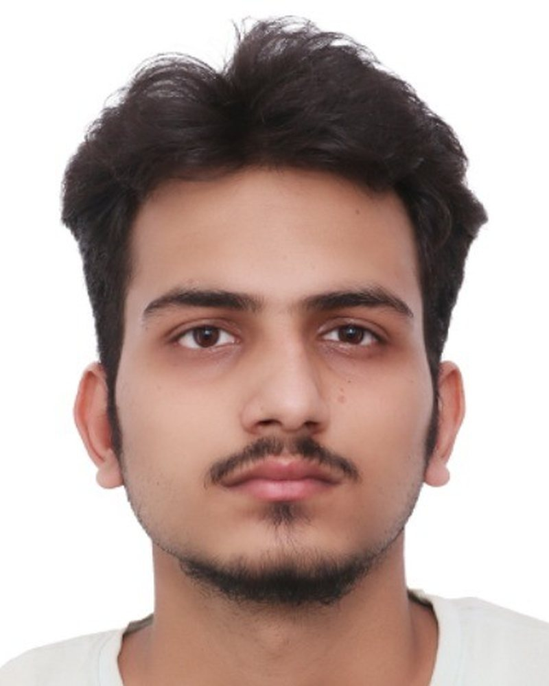
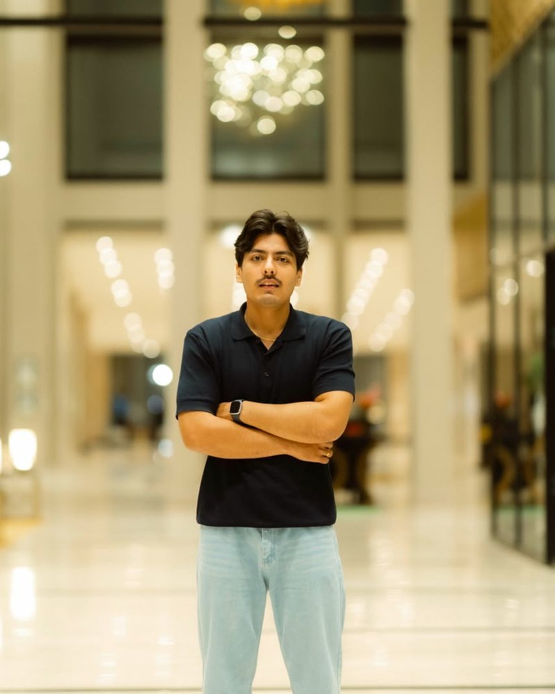

Pawan Pandey
Delivery & Technical Lead
Bridges business objectives with technical execution. Pawan oversees architecture scoping, delivery velocity, and stakeholder alignment.
Agile Delivery Architecture Scoping
Multiply is a four-partner software engineering studio based in Kathmandu, Nepal. We build high-performance web platforms, operational tools, and interactive digital products for teams who value direct practitioner collaboration over bureaucratic overhead.
Partners. Directly work with engineers from day one.
From scoping brief to your first clickable browser prototype.
In-house delivery across architecture, frontend, backend, and QA.
Code and IP ownership transferred completely to your team.
Traditional agency models add layers of bureaucracy, handoffs, and overhead that slow down delivery and muddy requirements. We founded Multiply to operate differently: a lean, focused engineering studio where you work directly with the partners designing, building, and deploying your software.
We keep projects transparent and high-velocity: the person in your technical discussions is the same practitioner writing the code and verifying it in production.
We believe code should be lean, tactile, and built to last. When we tackle a problem, we do not produce speculative slide decks. We build running software in the browser, validate it against real user constraints, and harden it with automated test suites.
Whether engineering a real-time operational dashboard or building SpotSafe 360, our in-house 360-degree training platform, our focus remains unchanged: building clean, resilient software that people actually want to use.
Four engineers and designers begin collaborating in Nepal, building reactive web platforms and exploring high-performance canvas interfaces.
Delivered custom inventory and workflow tools for regional enterprises, establishing our 2-week rapid prototyping methodology.
Conceived and built SpotSafe 360 from the ground up: a zero-install 360-degree hazard trainer with real-time scoring and supervisor analytics.
Multiply expands as an independent studio, partnering with founders and companies worldwide to deliver bespoke digital products.
Every product we accept is architected, crafted, and deployed directly by the four partners.

Delivery & Technical Lead
Bridges business objectives with technical execution. Pawan oversees architecture scoping, delivery velocity, and stakeholder alignment.
Lead Systems Engineer
Designs high-throughput backend services, database schemas, secure APIs, and browser-native simulation engines.

Product Strategy & QA Architect
Builds automated test suites, compliance verification, and performance benchmarks to guarantee rock-solid stability in production.
Product Engineer & UX
Crafts responsive web interfaces, design token architectures, and accessible interactive experiences with obsessive attention to ergonomics.
A transparent, four-phase engineering rhythm designed to eliminate waste and deliver real software quickly.
We analyze operational workflows, core user constraints, and technical architecture before committing to a delivery plan.
You test a running, responsive prototype directly in your browser with real code and working interactions.
We build production services, responsive interfaces, and thorough test pipelines to ensure long-term resilience.
You receive full repository ownership, comprehensive documentation, and direct deployment support.
These commitments guide sprint work, architectural decisions, and client relationships.
You speak directly with the engineers and designers building your application. Removing telephone layers keeps nuance intact and velocity high.
We do not rely on guesses. Every build is accompanied by automated verification, real browser simulation tests, and observable performance metrics.
Sub-second interactions, clear sensory feedback, and zero unnecessary dependencies. Software should feel fast and dependable on every device.
We build systems designed for your independence. You receive cleanly documented, modular codebases that your team can run and evolve without lock-in.